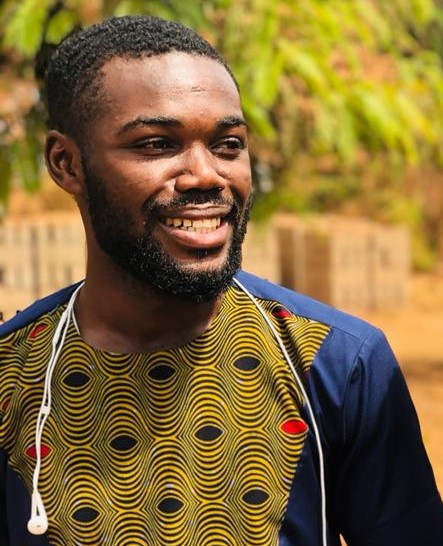

ISRAEL OHENEBA Nti
completed Acherensua Senior High School (ACHISCO) in 2018. Continued education in
Kwame Nkrumah University of Science and Technology (KNUST) by offering
Geomatic Enginnering. He has knowledge in land, hydrographic and photographic
surveying.
email : ontiisrael@gmail.com
contact (WhatsApp) +233 : 0504310117/ (0545493595)
Researcher
ISRAEL ABBEY DARKO completed Legon Presbytarian Senior High
School (PRESEC) in 2018.
email : israeldarko29@gmail.com
contact (WhatsApp) +233 : 0559909172/ (0570139606)
Supervisor
Dr. ISAAC Dadzie is a lecture of Geodesy, Department of Geomatic
Engineering, Knust.